Projects Portfolio
Academic
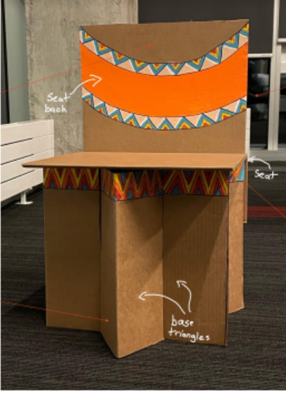
Cardboard Chair Project (APSC 100)
Design Engineering | September 2021 – October 2021
- Designed and constructed an innovative cardboard chair intended for schoolchildren in low-income communities in Kenya, focusing on sustainability and affordability.
- Produced an educational video detailing the chair's features, stakeholder considerations, and the engineering design process behind its development.
- Created a comprehensive poster showcasing design sketches, prototype iterations, and precise measurements, earning a project grade of 88%.
Skills Developed:
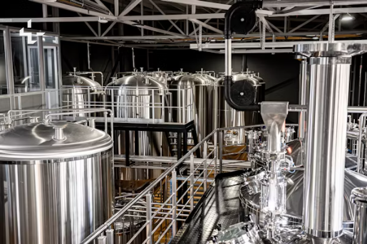
Distillation Laboratory Project (CHBE 366)
Chemical Engineering | February 2024 – March 2024
- Conducted a comprehensive distillation experiment separating n-propanol and n-butanol, demonstrating expertise in separation processes and laboratory techniques.
- Analyzed 23 distinct parameters across 9 equilibrium stages using Excel and Python, showcasing strong data analysis and process modeling capabilities.
- Documented findings in a detailed technical report that earned a grade of 94%, highlighting clear communication of complex chemical engineering concepts.
Skills Developed:
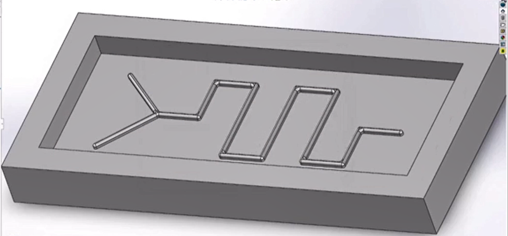
Microfluid System Project (CHBE 366)
Chemical Engineering | March 2024
- Designed and engineered a comprehensive microfluid system including a microfluidic channel, glass base, tube connections, and sealing O-ring.
- Developed precise molds for system components using SOLIDWORKS, ensuring accurate dimensions and functionality for micro-scale fluid manipulation.
- Demonstrated exceptional attention to detail and engineering precision, earning a near-perfect grade of 98% on the project.
Skills Developed:
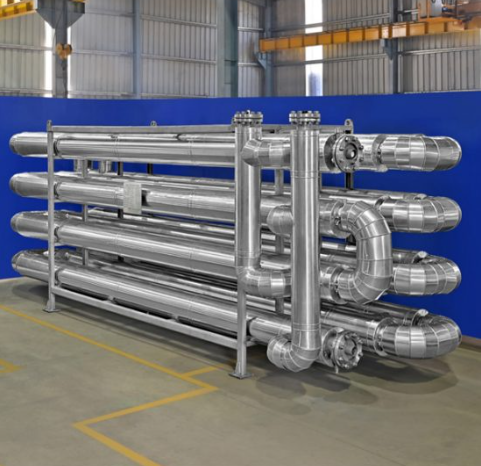
Tube-in-tube Heat Exchanger Project (CHBE 362)
Chemical Engineering | September 2023 – December 2023
- Spearheaded research with trials for the minimum time for a heat exchanger to reach steady-state operation, optimizing experimental procedures.
- Analyzed +1000 time points to determine the heat transfer coefficient as a function of flow rate and heating fluid temperature, demonstrating strong analytical skills.
- Achieved 99% accuracy for relevant parameters measured during the experiment and received a report grade of 95%, showcasing attention to detail and technical writing proficiency.
Skills Developed:
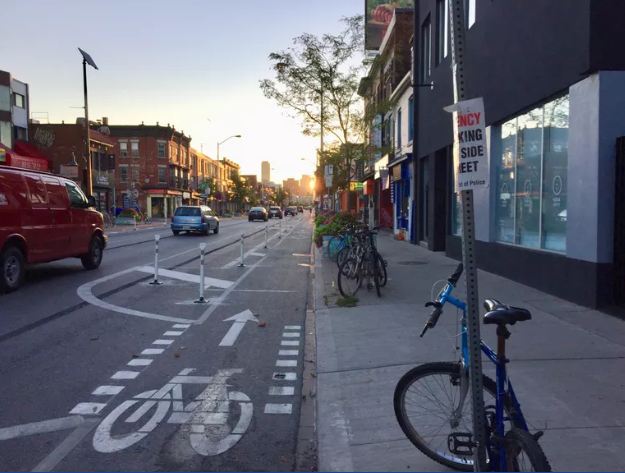
Cycling Lane Project (APSC 100)
Applied Science | October 2021 – November 2021
- Presented a cycling option to construct in Vancouver based on 2040 transportation goals by the City of Vancouver; the ideal cycling option was justified through environmental, social, and economic assessments.
- Utilized cost-benefit analysis, stakeholder analysis, and weighted criteria to analyze multiple cycling options.
- The cycling path was predicted to generate $85.5 million in terms of return on investment and create 137 jobs within the area of the cycling path based on economic and policy modelling.
Skills Developed:
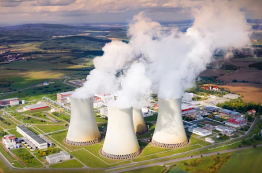
Air Pollution Scientific Poster Project (CHBE 264)
Environmental Engineering | January 2023 – April 2023
- Developed a scientific poster on an air pollution case study in Cancer Alley, highlighting environmental degradation, geographical challenges, socioeconomic conditions, and key industries.
- Created a diagram illustrating the industrial process and identified sources and types of pollution in the region.
- Utilized systems thinking and designed a causal loop diagram to depict the relationships among 21 social, economic, and environmental factors contributing to environmental degradation.
- Presented 4 evidence-based recommendations to reduce detrimental health outcomes by 67% and ecosystem damage by 94% over a 10-year period.
- Presented the scientific poster to an audience of 120+ students and 20+ faculty members; received a grade of 92% on the project.
Skills Developed:
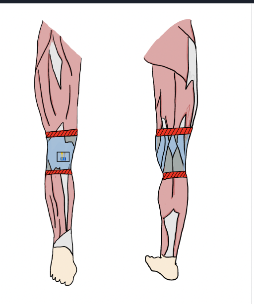
Biomechanics Design Project (BMEG 101)
Biomedical Engineering | March 2022
- Researched the anterior cruciate ligament (ACL) injury, including injury mechanisms, common symptoms, and severity assessment.
- Proposed an innovative preventative device design incorporating biomaterials like agarose gel and hydrogel, along with mechanical features including internal and rotational sensors.
- Developed a comprehensive laboratory procedure for device testing using displacement measurements and anthropometric models.
- Received a grade of 88% for the project, demonstrating strong research and design capabilities.
Skills Developed:
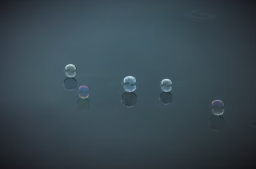
Biomaterials Lab Project (BMEG 102)
Biomedical Engineering | March 2022
- Designed a procedure for the quantification of protein release from alginate spheres, demonstrating expertise in biomaterials characterization.
- Utilized mathematical modeling with Excel to investigate the relationship between temperature, bovine serum albumin concentration, and protein absorbance.
- Wrote a comprehensive laboratory report analyzing results and identifying potential interference factors such as phospholipids in protein release studies; received a grade of 92%.
Skills Developed:
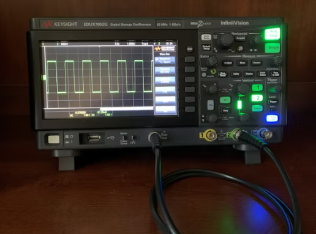
Signals & Systems Lab Project (BMEG 102)
Biomedical Engineering | January 2022 – February 2022
- Designed 3 circuits with oscilloscopes and voltage sources that varied by experimental conditions such as resistance using Simulink.
- Utilized circuit analysis to analyze 4 characteristics such as voltage amplitude and resistance, using a function generator, oscilloscope, and Simulink to maximize accuracy in electrical experimental design.
- Wrote a laboratory report that included an explanation of the relationship between the cell-membrane model and resistor-capacitor circuits, circuit analysis results, and ion channel disease analysis. Received a grade of 98%.
Skills Developed:
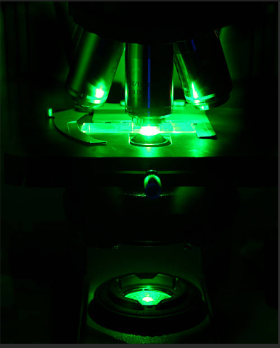
Cellular Bioengineering Laboratory Project (BMEG 102)
Biomedical Engineering | March 2022
- Conducted genetic transformation of E. coli using pGlo plasmid across six experimental conditions, applying sterile technique and heat shock protocols to induce exogenous protein expression.
- Assessed bacterial growth and GFP expression using brightfield and fluorescent microscopy, interpreting transformation outcomes across all samples.
- Quantified cell populations by analyzing 77 hemocytometer squares under microscopy, validating results with digital cell-counting software for accuracy.
- Diagnosed experimental failure through root cause analysis, identifying procedural flaws in thermal handling and sterilization that compromised bacterial viability.
- Proposed engineering-based protocol improvements to enhance experimental reliability, including thermal control adjustments and aseptic technique refinements.
Skills Developed:
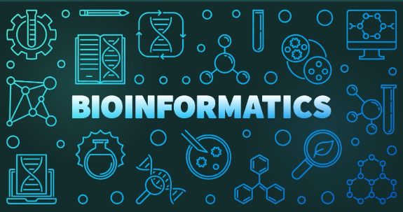
Bioinformatics Laboratory Project (BMEG 102)
Biomedical Engineering | April 2022
- Analyzed unknown protein sequences using BLAST, UniProt, Gene Ontology Resource, KEGG, and Protein Atlas to classify six genes as tumour suppressors or oncogenes.
- Developed and optimized a bioinformatics pipeline to extract molecular functions, cellular responses, and gene expressions related to breast cancer.
- Prioritized NF1 and VEGFA as therapeutic targets based on medium-to-high expression in >90% of breast cancer patients.
- Authored a comprehensive report proposing biosimilar production of Avastin using perfusion bioreactor systems; received a grade of 91%.
- Applied pathway analysis to identify NF1's role in Ras/MAPK signaling and VEGFA's involvement in angiogenesis, contributing to precision oncology strategies.
Skills Developed:
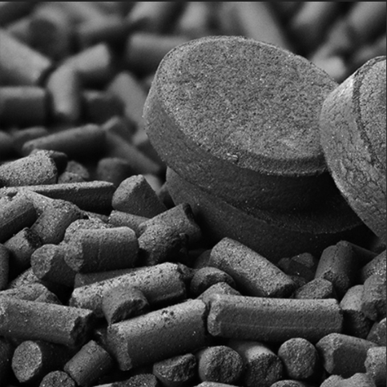
Adsorption & Activated Carbon Project (CHBE 264)
Chemical Engineering | January 2023
- Performed a laboratory study on the adsorption mechanism of methylene blue using activated carbon using 7 samples.
- Utilized linear regression techniques on Excel to create 5 plots of experimental data for mathematical modeling.
- Wrote a 30-page technical report to present our findings of the experiment; received a grade of 92%.
- Recorded 200+ data points and performed 60 calculations on the physical and chemical characteristics of methylene blue using Excel and partial differentiation.
Skills Developed:
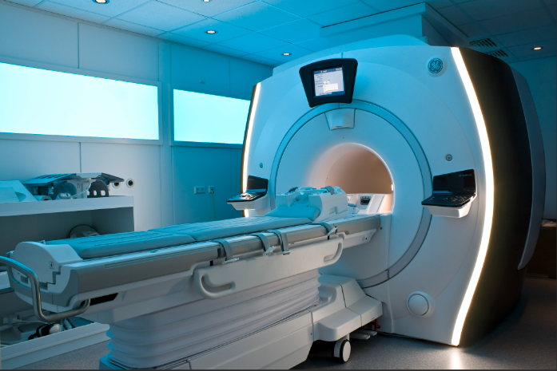
Biomedical Signals & Systems Project (BMEG 101)
Biomedical Engineering | January 2022 – February 2022
- Wrote a technical report on the usage of medical imaging for breast cancer by analyzing the types of medical imaging techniques used for breast cancer. Received a grade of 95%.
- Examined the history of and modern use of medical imaging technologies for breast cancer and diagnosis of the disease.
- Analyzed the future role of artificial intelligence, cybersecurity protection of medical data, and the impact of income inequality on the access to medical imaging.
Skills Developed:
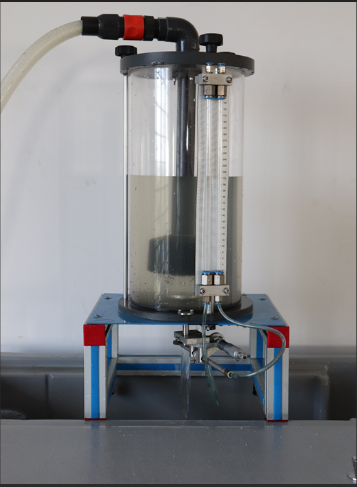
Fluid Mechanics Design Project (CHBE 264)
Chemical Engineering | February 2023
- Conducted a laboratory study on the fluid mechanics of water flow and its impact on 20 different parameters.
- Recorded 200+ data points and performed 25 calculations on water flow parameters using Excel and partial differentiation.
- Wrote a technical report to present our findings of the experiment and received a grade of 92%.
Skills Developed:
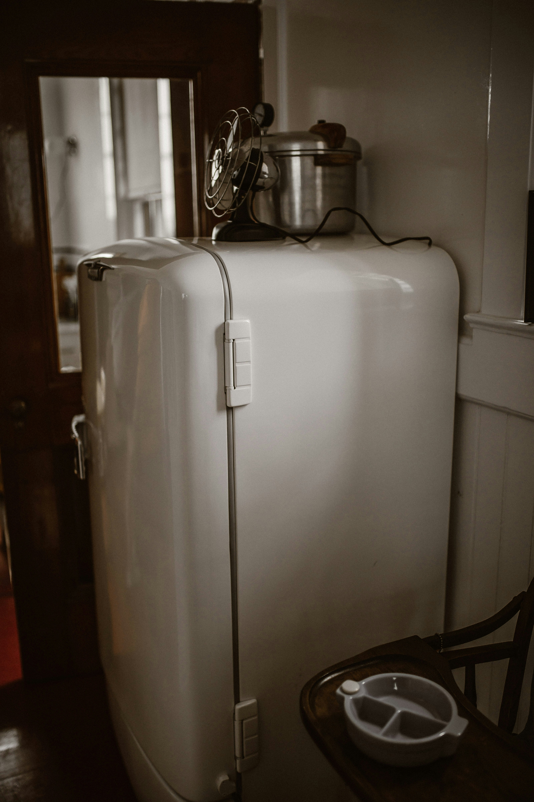
Thermodynamics Laboratory Project (CHBE 264)
Chemical Engineering | February 2023 – March 2023
- Conducted a laboratory study on the refrigeration cycle and the compressibility of real gases and modelled six thermodynamic phenomena.
- Recorded 200+ data points on 20 physical and chemical characteristics of refrigerants and performed 25 calculations using Excel and partial differentiation.
- Wrote a technical report to present findings of the experiment and received a grade of 92%.
Skills Developed:
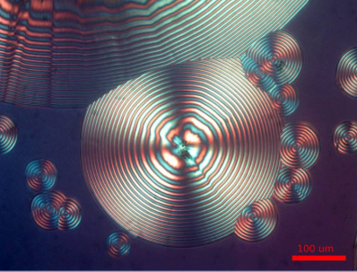
Polyhydroxybutyrate (PHB) Bioproduction Design Project (CHBE 221)
Bioprocess Engineering | January 2023 – April 2023
- Conducted research on 30 different areas of environmental, social, and economic considerations of PHB production.
- Designed a process flow diagram with 9 biological unit operations and 5 bioprocess control strategies to showcase PHB production.
- Presented a final design report summing 12 weeks of research and received a 98%.
Skills Developed:
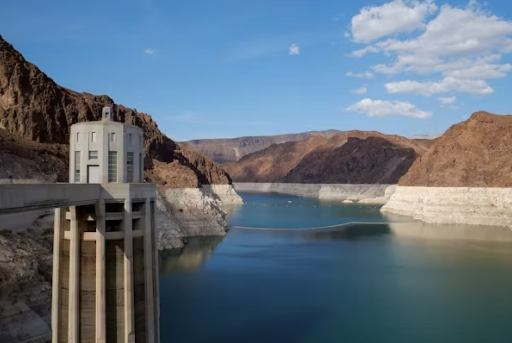
Alkaline Treatment Project (CHBE 263)
Chemical Engineering | November 2022
- Neutralized 7 samples of iron chloride with sodium hydroxide to decrease the solubility of iron chloride in water using a continuous stirred-tank reactor and flow control with rotameters.
- Utilized spectrophotometry and pH meter calibration to analyze iron standard solutions and generate an iron standard calibration curve.
- Composed a research report to summarize the experimental findings and received a 92%.
Skills Developed:
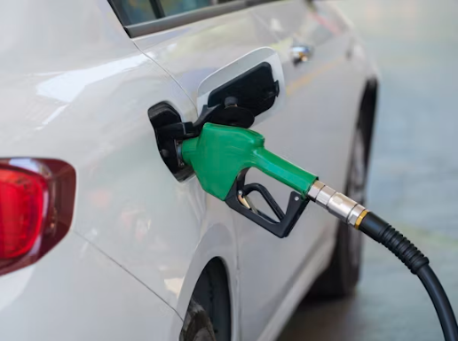
Biodiesel Laboratory Project (CHBE 263)
Chemical Engineering | October 2022
- Utilized transesterification to synthesize biodiesel from vegetable oil.
- Analyzed 5 thermodynamic properties of biodiesel using bomb calorimetry and Excel.
- Conducted 8 calculations and error analysis computations to analyze the thermodynamic properties of biodiesel using Excel and partial differentiation.
- Wrote a technical report to summarize the experimental findings and received an 80%.
Skills Developed:
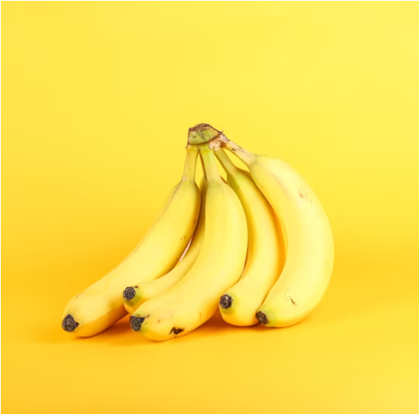
Banana Oil Synthesis Project (CHBE 263)
Organic Chemistry | September 2022 – October 2022
- Conducted an esterification reaction to produce 8 samples of banana oil with 85.3% yield and 98.3% purity.
- Analyzed 10 physical and chemical properties of synthesized banana oil using gas chromatography.
- Composed a technical report to summarize the findings of the experiment and received an 85%.
- Carried out 10 calculations and error analysis computations to analyze the properties of the banana oil using Excel and partial differentiation.
Skills Developed:
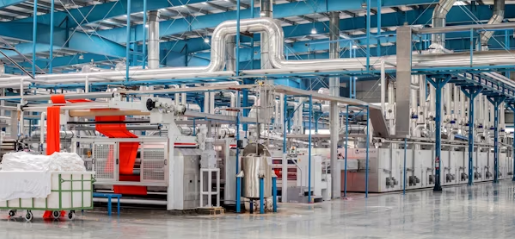
Acetone Design Manufacturing Project (CHBE 221)
Chemical Engineering | September 2022 – December 2022
- Researched cumene oxidation process which generates a 94% yield of acetone
- Compiled research on economic analysis, reaction pathways, separation pathways, and energy balances to maximize acetone production
- Designed a process flow diagram with 13 unit operations and 2 process control strategies to showcase acetone manufacturing
- Presented a final design report summing 12 weeks of research and received a grade of 95%
Skills Developed:
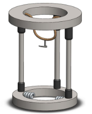
Assisted Living Device Project (APSC 100)
Biomedical Engineering | October 2021 – November 2021
- Collaborated with a team to develop 6 computer-aided models to design a can-opener for people with disabilities.
- Used stakeholder analysis and criteria-based quantitative analysis to identify the most ideal can-opener using criteria such as manufacturability, durability, and portability.
- Wrote a technical memorandum to explain the target design specifications, evaluation of device options, and the computer-aided prototypes.
Skills Developed:
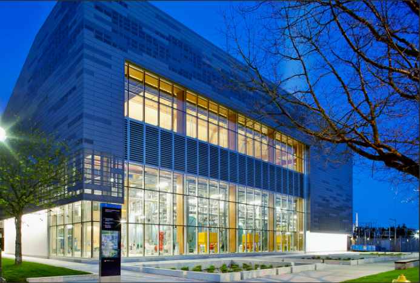
Data Analytics Project (CHBE 366)
Chemical Engineering | March - April 2024
- Developed Python-based analytics pipeline to clean 411,000 operational boiler data points, improving data integrity by eliminating outliers and sensor errors.
- Generated 15 data visualization plots using Python to identify the most appropriate boiler dataset for analysis.
- Quantified 4.82 million m³ of natural gas usage, enabling precise energy tracking and operational insights for campus heating systems.
- Replaced faulty NOx sensor data with calculated emissions using regulatory factors to enhance environmental compliance reporting.
- Wrote a comprehensive report on findings, achieving a grade of 94%.
Skills Developed:
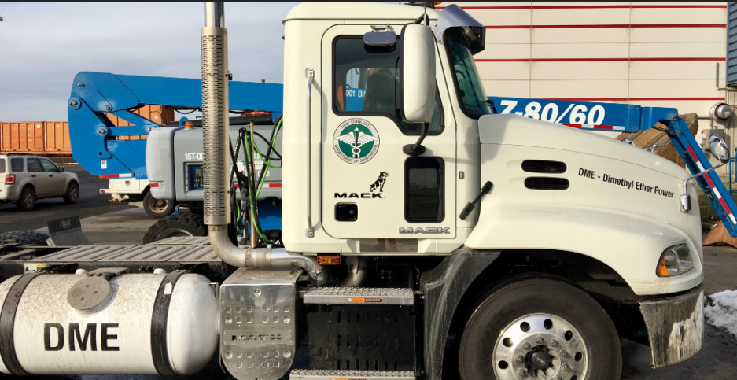
Dimethyl Ether Process Simulation (CHBE 376)
Chemical Engineering | March - April 2024
- Created a detailed Aspen PLUS simulation of dimethyl ether (DME) production from methanol, modeling key unit operations including a kinetic reactor, distillation column, and heat exchanger.
- Configured high-pressure equilibrium and kinetic reactors (up to 79.3 bar, 260°C) using RKSWS thermodynamic models to simulate exothermic reactions and optimize conversion efficiency.
- Performed seven parametric analyses on variables such as feed temperature and heat exchanger area to assess their impact on process performance and energy integration.
- Developed comprehensive block flow diagrams and stream specifications, integrating recycle loops and separation units to enhance process efficiency and operability.
- Achieved a final grade of 100%, demonstrating strong technical proficiency and attention to detail in process simulation and reactor design.
Skills Developed:
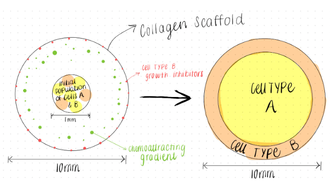
Cellular Bioengineering Project (BMEG 101)
Biomedical Engineering | April 2022
- Researched and documented applications of tissue engineering in developing a two-dimensional cell system optimized for cell proliferation.
- Designed a comprehensive experimental protocol with controlled conditions to study and optimize cell proliferation processes.
- Conducted mathematical modeling and data analysis to quantify and predict cell growth patterns, achieving an 88% project grade.
Skills Developed:
Personal Projects
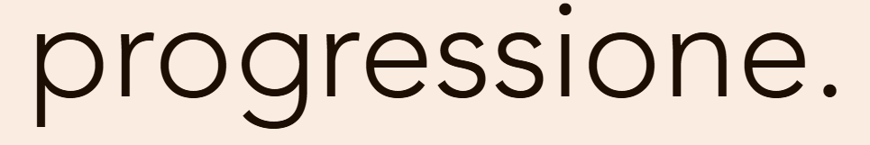
Progressione
Web Development | June 2022
A study development and productivity website designed to enhance students' study habits, productivity, motivation, and physical and mental well-being. The platform inspires and motivates students while improving the efficiency of their study sessions.
×